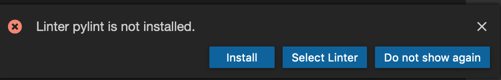
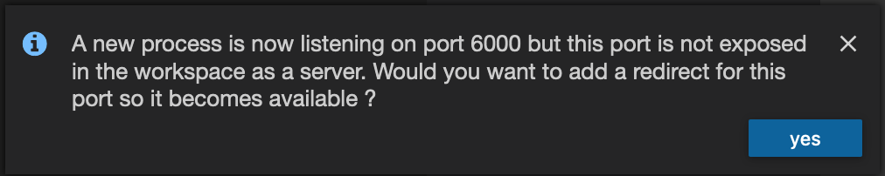

7 Productize the Model
Productize The Model
Now the model has been created, we will now begin to productize the model in the development environment.
We will be using CodeReady Workspaces and juyptext to convert
the notebook to python code.
Logging Into CodeReady Workspaces
You will be using Red Hat CodeReady Workspaces, an online IDE based on Eclipse Che. Built on the open Eclipse Che project, Red Hat CodeReady Workspaces uses Kubernetes and containers to provide any member of the development or IT team with a consistent, secure, and zero-configuration development environment. The user experience is as fast and familiar as an integrated development environment (IDE) on their laptop.
CodeReady Workspaces is included in OpenShift® and is available in the OpenShift Operator Hub. Once deployed, CodeReady Workspaces provides development teams a faster and more reliable foundation on which to work, and it gives operations centralized control and peace of mind.
To get started, access the
CodeReady Workspaces instance, and log in using the username and
password you’ve been assigned
(e.g. user1/r3dh4t1!):
Once you log in, you’ll be placed on your personal dashboard. Click on the name of the pre-created user1-workspace on the bottom left, as shown below (the name will be different depending on your assigned number).
After a minute or two, you’ll be placed in the workspace:
|
If things get weird or your browser appears, you can simply reload the browser tab to refresh the view. |
This IDE is based on Eclipse Che (which is in turn based on MicroSoft VS Code editor).
You can see icons on the left for navigating between project explorer, search, version control (e.g. Git), debugging, and other plugins. You’ll use these during the course of this workshop. Feel free to click on them and see what they do:
Your git repositories will be cloned to /projects automatically for you:
-
rh-mlops-workshop: Source repository for the model
-
rh-mlops-model-deploy: Kubernetes deployment artifacts
Changes to files are auto-saved every few seconds, so you don’t need to explicitly save changes.
Converting A Notebook To Python Code
Within your workspace, click on >_ New Terminal.
|
You can open a terminal window for any of the containers running in your Developer workspace. For the rest of these labs, anytime you need to run a command in a terminal, you can use the >_ New Terminal command on the right. If the new terminal takes too long to launch or the user interface freezes, try refreshing the browser or restarting the workspace. |
|
To restart the workspace: On the CodeReady main page, click on the Workspaces you are using, and then click the "Stop" button next to your new workspace. You may get an error popup which you can ignore. Then, click the "Start" button to restart the workspace. |
Run the following commands to convert a notebook into a python code.
pip install jupytext
cd /projects/rh-mlops-workshop/notebooks/
jupytext "2 building the first model.ipynb" -o ../src/train/lr.pyTo inspect the newly converted file, the user can navigate from the file explorer under "Open File"
|
You can ignore the pylint warning

|
Refactor the New Model
Next, we will then modify the code into a format that the pipeline can
run to train and build the image with the model. The pipeline will call
train-stage.sh and expects the model to be written to a folder at
/workspace/model.
We have prepared the refactored model at /projects/rh-mlops-workshop/src/train/lr.ans.py. Copy it to /projects/rh-mlops-workshop/src/train/lr.py. The python code generated from the notebook has been refactored into a python class and visualization removed.
cp /projects/rh-mlops-workshop/src/train/lr.ans.py /projects/rh-mlops-workshop/src/train/lr.py|
Copying the file will override the jupytertext converted lr.py. |
Note that in the lr.py file, there is a section on the version of the data used. The version of the data used is going to be committed together with source, thus allowing us to have reproducible results easily with dvc.
|
Note that the code directly below this statement is not meant to be run but serves as an illustration for the user to take note of the versioning of the data. |
DATA_VERSION = 'v1.0'
# PIPELINERUN will be set when run from the pipeline
if os.environ.get('PIPELINERUN', None):
CSV_FILE = 'creditcard-train.csv'
else:
CSV_FILE = 'creditcard.csv'Train And Test The Model
To train the model, run the following script:
cd /projects/rh-mlops-workshop
src/train/train-dev.shThe model would have been written to /opt/app-root/src/model.
As part of the training, the metrics and model will be logged at MLflow server.
Now start serving the model using REST. A model wrapper has been written to serve the model using Seldon. The model will be loaded and the predict_proba method will be called. Seldon will wrap the model using Flask and expose the port 5000.
|
Note that the code directly below this statement is not meant to be run but serves as an illustration of the model wrapper. |
class LRModel(Base):
def __init__(self):
# Load the model
def predict(self, X, features_names):
# Calls the model predict_proba methodServe the model by running app.sh.
cd /projects/rh-mlops-workshop/src/seldon/
./app.sh|
You can ignore this popup box because we are not exposing the route.

|
Now let’s test the model. Open up a new terminal and run the following:
/projects/rh-mlops-workshop/bin/dev-test.sh|
If the new terminal takes too long to launch or the user interface freezes, try refreshing the browser or restarting the workspace. |
The script will send both fraud and non-fraud requests to the model.
Commit the Code
cd /projects/rh-mlops-workshop/src/train
git add *
git commit -a -m 'my lr training code'
git push -v origin masterThe code has now been pushed to your git
repository on the master/devel branch.